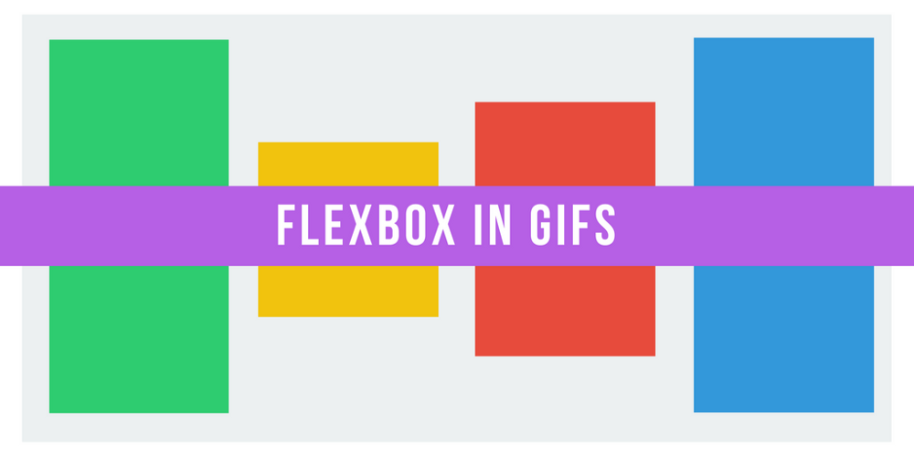
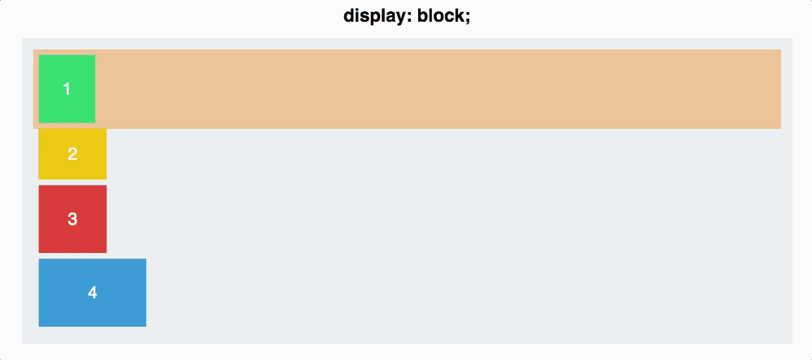
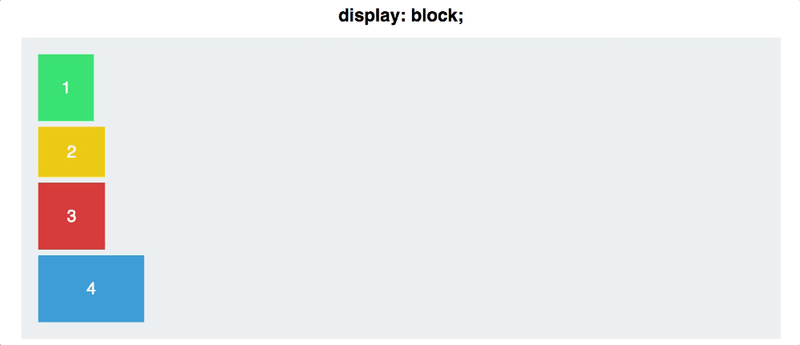
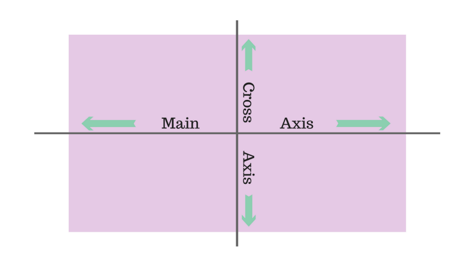
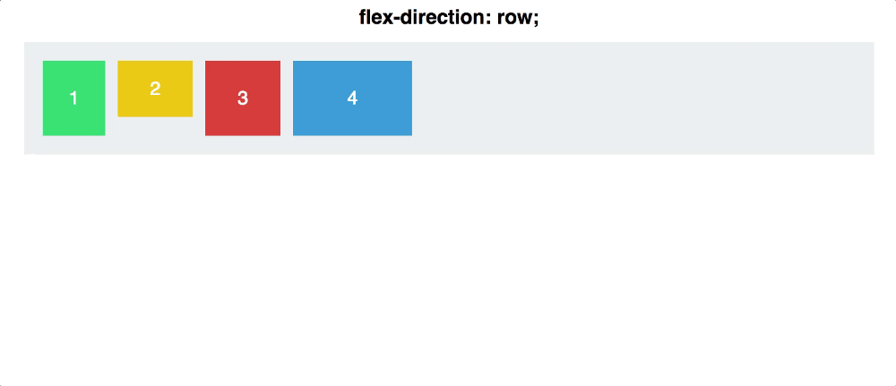
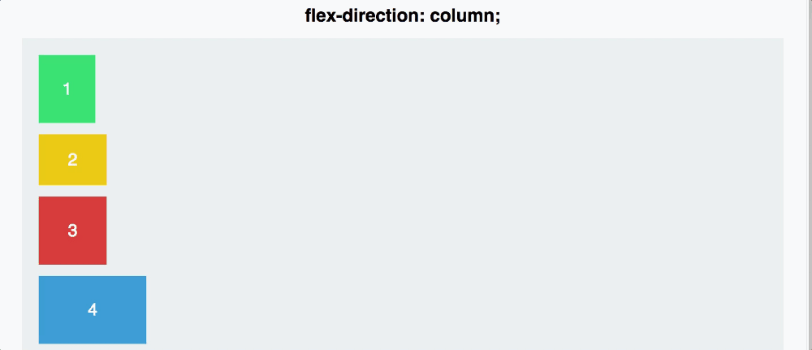
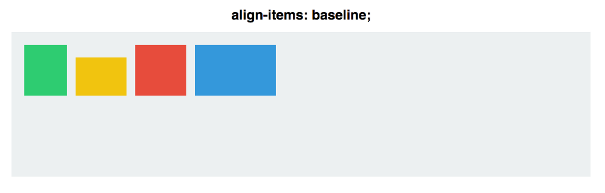

用大气的鲜艳的gif图解释flex如何工作

Flexbox承诺从纯CSS地狱（比如垂直居中）中拯救我们。
好吧，Flexbox确实实现了它的这个目标。然而掌握这种新的思考模型会是具有挑战性的。
因此让我们用动画来观察Flexbox如何工作，然后我们可以用它搭建更好的布局。
Flexbox的根本原则是使布局更加灵活和直观。
为了达到这个目的，它让容器自己决定如何均匀分配子元素，包括元素本身的大小以及元素间的间距。
在原理上这一切听起来都挺不错，让我们实际使用看看如何。
在这篇文章，我们会探查5种最常见的Flexbox属性。我们将会探索它们做什么，如何使用以及最终看起来效果是怎样的。
属性#1：Display:Flex

这里有一个灰色的作为容器的div，它包含四个颜色各异大小不一的div。目前，每个div都默认是display:block，因此每个方块都占据整行空间。
为了开始尝试Flexbox，你需要把容器变成一个flex容器。这可以很容易用下面代码实现：
|
|

看起来并没有多大变化——现在这些div排成一行了，但这就是关键。在背后，你已经完成了非常强大的东西。你给了你的四个方块某个叫做flex context的东西。
你现在可以用比传统CSS容易得多的方式在该context中给它们定位。
属性#2：Flex Direction
一个Flexbox容易有两个轴：主轴（Main Axis）和纵轴（Cross Axis），默认它们看起来是这样：

元素默认在主轴上从左到右排列的。这就是为什么一旦应用上display:flex，你的四个方块默认就水平排成一行了。
因而Flex-direction让你决定如何转动主轴。
|
|

注意这里有个重要区别：flex-direction:column并不会将你的方块从在主轴排列改为在纵轴排列。它将主轴本身从水平改为垂直的了。
flex-direction属性还有其他的一些可选值：row-reverse和column-reverse。

属性#3：Justify Content
justify-content控制元素在主轴上的对齐方式。
这里，你将需要更深入地区分主轴和纵轴。首先，让我们回退到flex-direction:row。
|
|
你可以随意使用以下5个值来定义justify-content：
Flex-start
Flex-end
Center
Space-between
Space-around

Space-between和Space-around最不直观。Space-between给方块间同等距离的间距，但是首末方块与容器间不会有间距。
Space-around的每个方块两边都会分配同等距离空间——这意味着最外边的方块与容器的间距是两个方块间距的一半（每个方块都占有同等距离的非重叠间距，因此距离加倍）。
最后一点：记住justify-content对主轴起作用，而flex-direction会交换主轴。这在接下来将会变得重要。。。
属性#4：Align Items
如果你“搞定”justify-content，那么align-items将是轻而易举的事。
正如justify-content作用在主轴上，align-items作用在纵轴上。
我们将flex-direction重设为row，以让两条轴看起来和上图一致。
然后，让我们研究align-items的值。
flex-start
flex-end
center
stretch
baseline
前面3个并没什么特别新奇的，因为它们和justify-content的完全一致。
然而后面两个确实有点不同。
在stretch模式下元素会占据纵轴的全部空间，而baseline则会让元素按段落标签的底部对齐。

（注意对于align-items:stretch，我得把方块的高度设置为auto，否则height属性的值会覆盖stretch。）
对于baseline，注意如果你移除了段落标签，那么方块会像下面一样的反而按底部对齐。

为了更好地演示主轴和纵轴的区别，让我们组合justify-content和align-items看看它们在center模式下对于flex-direction的两个不同值会有何不同：

对row值，方块会沿着水平主轴排列。而对于column值，它们沿着垂直主轴堆叠。
尽管在两种情况下方块都是水平和垂直居中的，但它们并不是可以互相替换的。
属性#5：Align Self
align-self允许你手动调整特定元素的对齐方式。
从根本上说它的值将align-items的值覆盖了。所有元素的align-self值都是相同的，默认为auto，在这种情况下元素会按容器指定的align-items的值对齐。
|
|
让我们看看效果。我们将指定两个方块的align-self值，其它的则使用align-items:center和flex-direction:row。

总结
尽管我们这里只是揭开了Flexbox的面纱，但这些属性对于你处理大多数常见的对齐应该是足够了——尤其是垂直居中你心爱的内容。
如果你想看到更多Flexbox的gif图教程，或者这篇教程对你有帮助，请推荐一下这篇文章或者在下面评论。
多谢阅读！